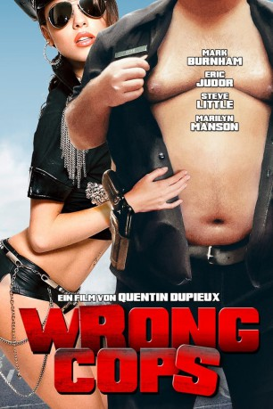
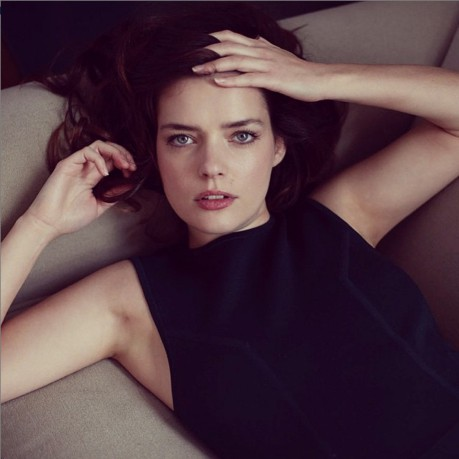
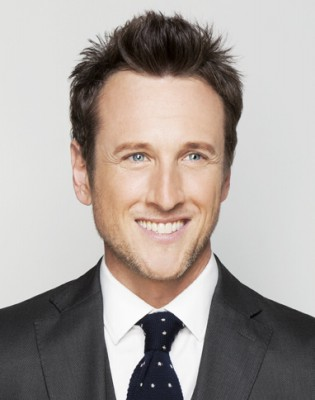

#8999 Wrong Cops - Von Bullen und Biestern
 
 IMDB-Wertung: 6.0 / 10
IMDB-Wertung: 6.0 / 10  Metascore: 0
Metascore: 0 
In einer dystopischen Zukunft haben die Polizeikräfte von Los Angeles jegliche Kriminalität ausgelöscht. Da die Cops sich jetzt langweilen, werden sie aggressiv und missbrauchen ihre Macht auf ebenso obszöne wie absurde Weise. Officer Duke (Mark Burnham) etwa belästigt den Teenager David Dolores Frank (Marilyn Manson), erschießt - mehr oder minder versehentlich - seinen Nachbarn und will die Leiche anschließend mithilfe seiner Kollegen fortschaffen. Doch was ist, wenn das Opfer gar nicht so tot ist, wie zunächst angenommen? Weitere Mitglieder seiner Einheit, die Officers Sunshine (Steve Little), Holmes (Arden Myrin) und de Luca (Eric Wareheim) haben zudem alle mit ihren eigenen Problemen zu k��mpfen. So wird Sunshine von Dolores erpresst, weil sie den Familienvater in einem schwulen Pornoheft entdeckt hat und dieser wiederum engagiert Officer Rough (Eric Judor), damit dieser die Erpresserin während der Geldübergabe hinterrücks erschießt.
Jahr: 2013
Dauer: 82 Minuten
FSK: 12
Land: Frankreich Studio: Sunfilm EntertainmentTonspuren: DTS - ,
Untertitel:
Auflösung: 1080p (1920x856) Größe: 5580 MB
Genre: Komödie, Krimi
Regisseur: Quentin Dupieux
Drehbuch: Quentin Dupieux
Soundtrack: Quentin Dupieux
Darsteller:
- Mark Burnham als Officer Duke
- Eric Judor als Officer Rough
 Agnes Bruckner als Julia Kieffer
Agnes Bruckner als Julia Kieffer- Kurt Fuller als Music Producer
 Steve Howey als Sandy / Michael
Steve Howey als Sandy / Michael Steve Little als Officer Sunshine
Steve Little als Officer Sunshine- Marilyn Manson als David Dolores Frank
 Arden Myrin als Officer Holmes
Arden Myrin als Officer Holmes Eric Roberts als Bob
Eric Roberts als Bob- Eric Wareheim als Officer De Luca
 Ray Wise als Captain Andy
Ray Wise als Captain Andy Grace Zabriskie als Donna (Duke's Mother)
Grace Zabriskie als Donna (Duke's Mother)- Daniel Quinn als Neighbor
- Brandon Beemer als Officer Brown
- Jonathan Lajoie als Officer Regan
- Jennifer Blanc-Biehn als Ruth (Rough's Neighbor)
- Hillary Tuck als Kylie (Sunshine's Wife)
 Don Stark als Gary
Don Stark als Gary- Ping Wu als Chinese
- Joel Bryant als Bill (Holmes' Husband)
- Tim Trobec als André (Ruth's Husband)
- Brennan Feonix als Screw
- Vanessa Sapien als Rodriguez (Lady in Wheelchair)
- Norton Leufven als Kid (in Diner)
- Bob McCracken als Willy
- Alyssa Preston als Cynthia
-  Roxane Mesquida als Special Guest
- Steven Ellison als Special Guest
- Paul Preston als Special Guest
-  Jack Plotnick als Special Guest
 Sebastian Feldman als Crying Cop at Funeral (uncredited)
Sebastian Feldman als Crying Cop at Funeral (uncredited)- Annmarie Lynn Gracey als Trashy Girlfriend (uncredited)
- Nicky Hawthorne als Julia's Griend (uncredited)
- Jimmy C. Hong als Officer Harding (uncredited)
- Jen Nikolaisen als Sally (Stroller Mom) (uncredited)
- Patrick Weil als Dead Man (uncredited)
- Max Nicolas als Kevin (Holmes' Son)
- Eddie Tapia als Fernando
- Izzy Palmieri als Rose
- Mary Loveless als Cashier
- Mona Walravens als Special Guest
- Wesley Pentz als Special Guest
- Alexandra Amadio als Julia's Friend (uncredited)
- Pete Cross als Father (uncredited)
- Melina Paez als Mother (uncredited)
Datei: X:\2013(N-Z)\Wrong Cops - Von Bullen und Biestern (2013, FSK12, 1920x856).mkv seit 17.05.2018
Festplatte: HD 2013(I-Z)-2014(A-Z)
 Es gibt insgesamt 133 Filme in der Gruppe '2013(N-Z)'
Es gibt insgesamt 133 Filme in der Gruppe '2013(N-Z)'